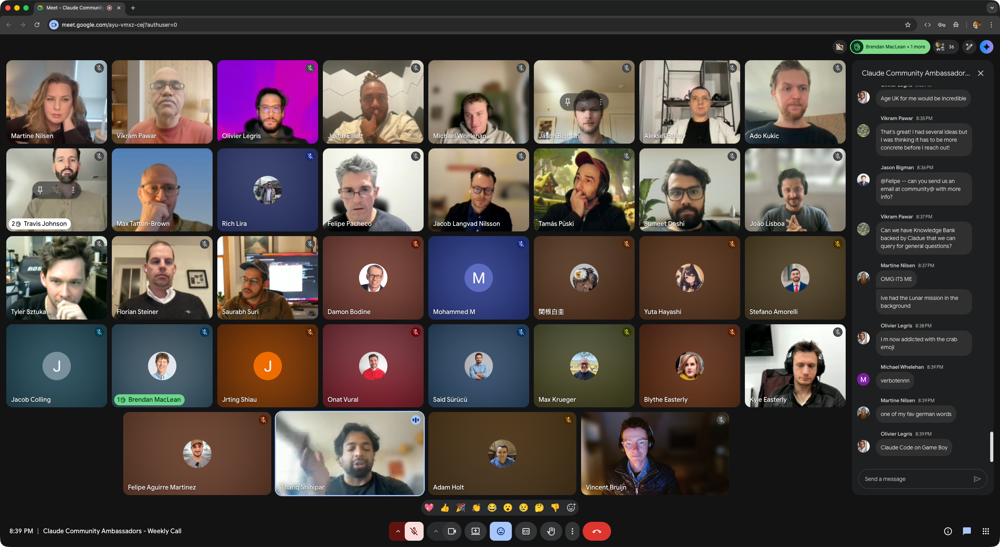

Claude Community
Friday 2026-10-09

talk
Stay on the lookout for that accelerating coworker, and foster them!
Vincent Bruijn
1 · who am I
2 · after the rollout
Convince people to give them time to experiment
3 · spot them
A combination of these signs
They complain about limits. Ask how they hit them.
We see it because we discuss openly in a cross-department chat group
4 · foster them
They usually have a vision
Learn from them
5 · spread adoption
A head of tech with 100 staff hired 3 to 4 people just to walk around, nudge and explain what AI could automate
Serve the food on the plate, not in the mouth
What task did I do this week that I could have done with AI?
6 · guardrails
7 · takeaway
repo
github.com/y-a-v-a
site
vincentbruijn.nl
Vincent Bruijn · Claude Community Ambassador